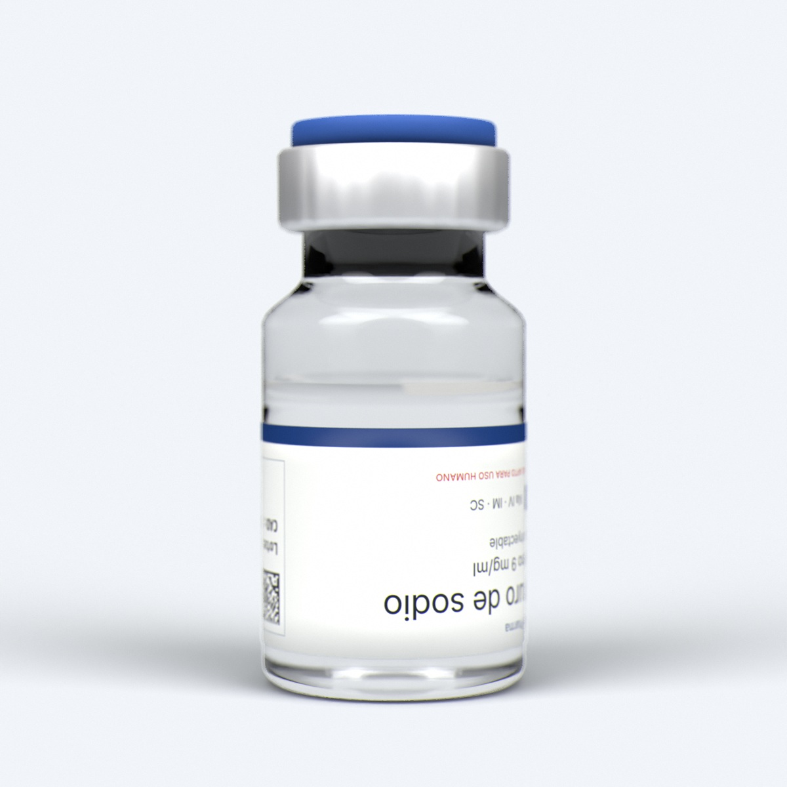
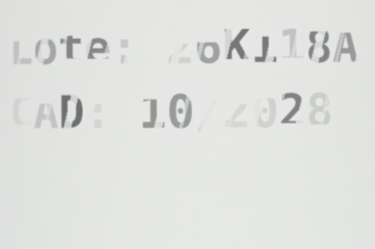

Every label, around its entire perimeter
Colour vision inspects label presence, orientation and content, including traceability markings: it detects incomplete or illegible markings, and reads and checks each vial's code.

Missing or incorrect label

Misaligned label

Incorrect orientation

Batch and expiry-date reading

Data Matrix and barcode
- Serial-number reading
- Regulatory label content